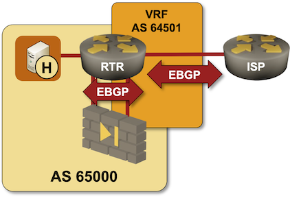

Run EBGP Between VRF Instances on a Single Router
In the Running EBGP Across a Firewall lab exercise, you learned how to establish a multihop EBGP session across a layer-3 firewall between an internal router and a WAN edge router.
In small networks, you might not have two dedicated routers to work with; you will have to use routing instances (commonly called Virtual Routing and Forwarding tables – VRFs) to reuse the WAN edge router as the internal router.

In this lab exercise, you’ll connect your internal network to the Internet through a firewall using a single router. You’ll have to:
- Create a WAN VRF on your router
- Establish an EBGP multihop session across the firewall between an interface in the global routing table and another interface in the WAN VRF.
- Establish an EBGP session in the WAN VRF with the upstream ISP.
- Advertise the internal IP prefix across the firewall and through the WAN VRF to the ISP router
- Advertise the default route from the WAN VRF to the global BGP instance.